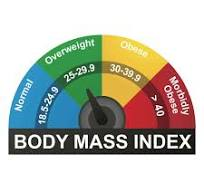

In my Data Exploration portfolio project using SQL Server Management Studio (SSMS), I analyzed a COVID-19 dataset to explore trends in cases, recoveries, and deaths across different regions. Through SQL queries, I calculated key metrics such as daily infection rates, case growth, and recovery percentages. The project also included examining vaccination progress and its correlation with case reductions. This work highlighted my skills in SQL data exploration and using SSMS to derive actionable insights from large datasets.
In my SQL Data Cleaning portfolio project using SQL Server Management Studio (SSMS), I worked with a Housing dataset to identify and resolve data quality issues. I utilized SQL queries to remove duplicates, handle missing values, standardize data formats, and ensure data integrity. The cleaned and transformed dataset was prepared for further analysis, providing accurate insights into housing market trends. This project demonstrated my expertise in data cleaning and proficiency with SSMS.

In my Tableau portfolio project, I combined SSMS and Excel to work with COVID-19 data. I wrote queries in SSMS to extract and prepare the data, then used Excel to create detailed tables. With this cleaned and organized data, I built visualizations in Tableau, including maps, bar graphs, and line graphs, to highlight trends in COVID-19 cases, recoveries, and vaccinations. This project demonstrated my skills in data preparation, analysis, and visualization using SSMS, Excel, and Tableau.

I created a BMI calculator using Visual Studio Code (VSC) by writing a Python program that takes a user's name, weight, and height as inputs. The program calculates the Body Mass Index (BMI) based on the input data and categorizes the result into underweight, normal weight, overweight, or obese. This project demonstrated my proficiency in Python and the ability to develop basic applications using VSC.
I developed an automatic file organizer using Python in Jupyter notebooks, with the code written in Visual Studio Code (VSC). This script organizes files in a specified directory into subfolders based on file types or extensions. The project demonstrated my ability to automate file management tasks and work with Python to streamline workflows.